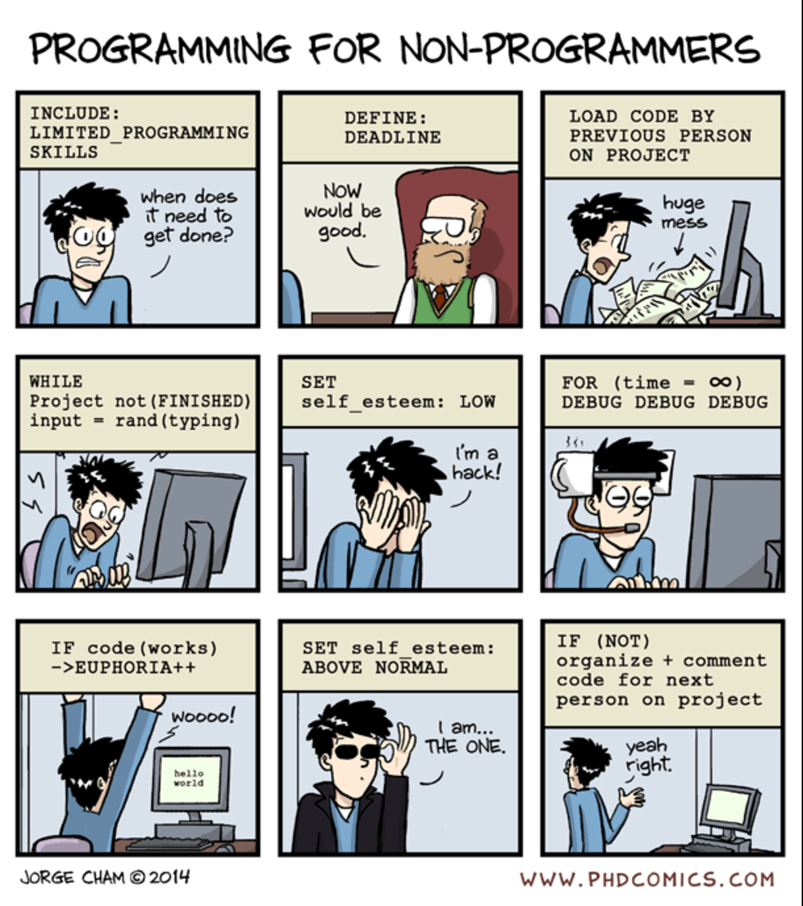
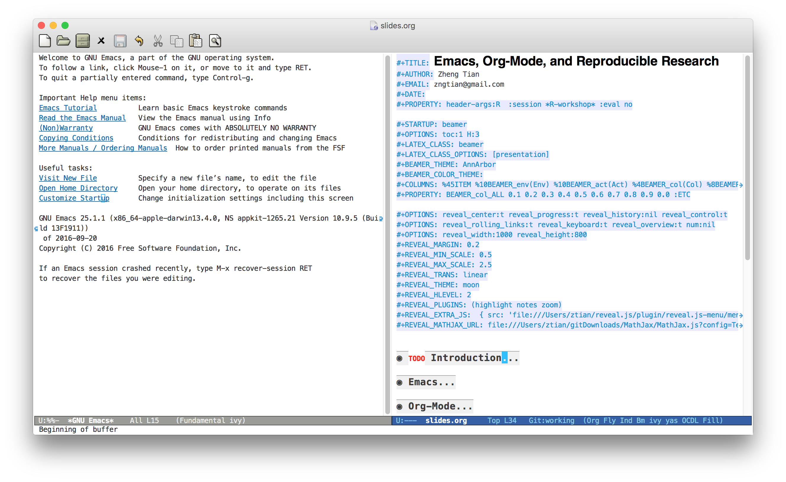
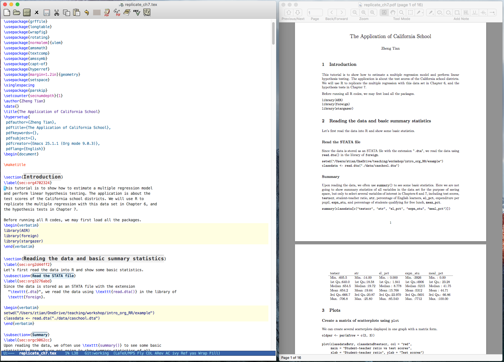
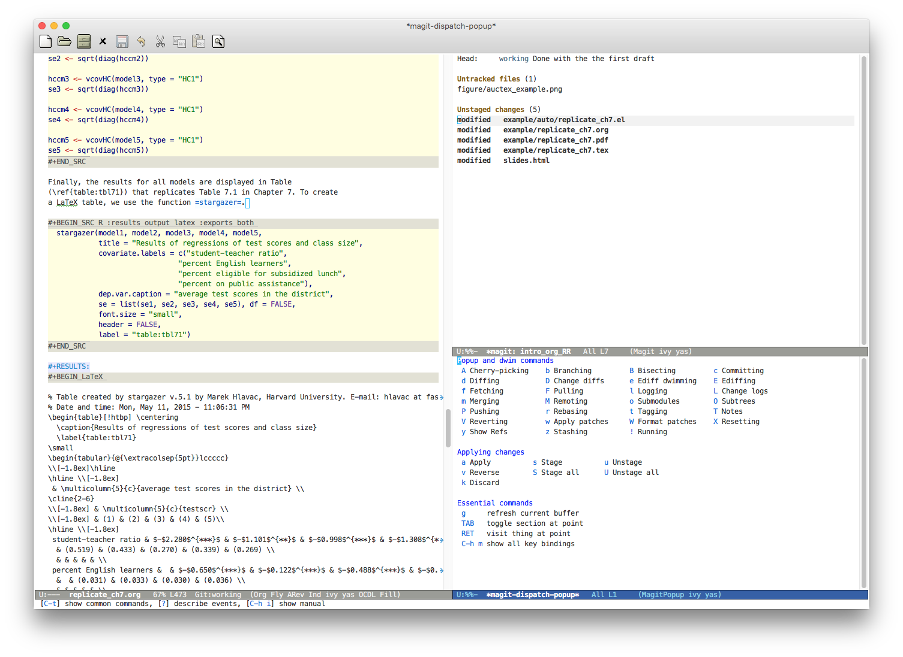

Emacs, Org-Mode, and Reproducible Research
Zheng Tian
Created: 2017-02-08 Wed 15:30
Table of Contents
Introduction
Have you ever experienced this?

Reproducible research
An article about computational science in a scientific publication is not the scholarship itself, it is merely advertising of the scholarship. The actual scholarship is the complete software development environment and the complete set of instructions which generated the figures.
– Buckheit and Donoho (1995)
How can we do reproducible research?

You can download my presentation at https://github.com/zngtian/intro_org_RR
Emacs
What is Emacs? A text editor.
GNU Emacs is a free, portable, extensible text editor.
- Free
- Open source, freely copyable and redistributable.
- Portable
- Run on many machines under different operating systems.
- Extensible
- Customizable for all aspect and many contributed packages,
Emacs is beyond a text editor
Emacs is a LaTeX editor via AucTex

Figure 3: An illustration of the AucTex mode
Emacs is IDE for programming languages
- Edit code with syntax highlighting
- Execute code within Emacs

Figure 4: An illustration of the ESS mode
Emacs is an operating system
- Emacs is an operating system, easily managing files and folders within a dired-directory interface.

Figure 5: Emacs as an operating system with the dired mode
Emacs is a Git tool via Magit

Figure 6: An illustration of the Magit mode
Emacs can do many other things
- Emacs can do spell checking, reading news, checking and sending emails, etc., through plenty of contributed packages.
- Most importantly, Emacs enable researchers to manage research project, take notes, and write dynamic documentation.
Installation and Configuration
Installation
- Homepage of GNU Emacs: https://www.gnu.org/software/emacs/
- Vincent Goulet's binary files: http://vgoulet.act.ulaval.ca/en/emacs/
Configuration
Emacs is customizable and all customized configuration can be done
with either a .emacs file or init.el under the directory
~/.emacs.d.
With some settings, we can use an org file to organize and apply your customization.
My settings
All my settings have been uploaded to Github from where you can download or
git clone https://github.com/zngtian/.emacs.d.git
Basic usage of Emacs
Notation
In Emacs documentation, we often see the following notations
- C-x
- Press Control key and x
- M-x
- Press Alt key and x
- RET
- Press the return key
- SPC
- Press the space bar
- ESC
- Press the escape key
- S-<TAB>
- Press shift and tab keys
Buffer and windows
The basic user interface of Emacs is in buffers and windows

Figure 7: An example of Emacs buffers and windows
Motion within a buffer
- C-f and M-f
- move forward by one character and by one word
- C-b and M-b
- move backward by one letter and by one word
- C-n and C-p
- move downward and upward
- C-v and M-v
- scroll down and up
- M-< and M->
- move to the start and to the end of a buffer
Switch buffers and windows
- C-x 2
- open a new buffer
- C-x 0
- close the current buffer
- C-x b
- switch to a buffer
- C-x o
- switch between two opened buffers
- C-x 4 b
- switch to a buffer and open it as a new one
- C-x 5 2 and C-x 5-0
- open and close a new window
Open, save, quit, and help
- C-x C-f
- open a new file
- C-x C-s
- save the current buffer
- C-x s
- save all files
- C-g
- cancel the currently invoked command. VERY IMPORTANT!
- C-x C-c
- exit Emacs
- C-h ?/m/a
- get help
Copy, yank, and delete
- C-SPC
- set a mark and move the cursor around to select a region
- C-w
- kill (cut)
- M-w
- copy
- C-y
- yank (paste)
- DEL and C-d
- delete a character backward and forward
- M-DEL and M-d
- delete a word backward and forward
- C-k
- kill a line.
- C-x u
- undo the previous editing.
Tutorial and cheat sheet
- C-h t
- open the complete tutorial
- A guided tour
- https://www.gnu.org/software/emacs/tour/
- Cheat sheet
- https://www.gnu.org/software/emacs/refcards/pdf/refcard.pdf
Org-Mode
What is org-mode
Org mode is one of the most popular contributed packages in Emacs. It can accomplish a variety of work including, but not limited to,
- taking notes with structured documentation,
- assigning tasks and scheduling them,
- editing tables and doing calculation,
- exporting to pdf, html, odt files,
- working with source code.
Structured document
Headline
* Top level headline
** Second level
*** 3rd level
some text
*** 3rd level
more text
* Another top level headline
- <TAB>
- hit at a headline to see and hide the content under it
- S-<TAB>
- global cycling.
- M-left and M-right
- promote and demote a heading
Lists
- Unordered list + Item 1 + Item 2 - Ordered list 1. first thing 2. second thing 3. third thing - Description - Tom :: a cat - Jerry :: a mouse - List with check box - [X] Do this - [ ] Do that
Special elements
Links
The basic syntax for a link:
[[link][description]] or [[link]]
Internal link: Lists
[[Lists]]
External link: slides.tex
[[file:slides.tex]]
URL: http://rri.wvu.edu/
[[http://rri.wvu.edu/]]
Blocks
- Blocks are defined by
#+BEGIN_... and #+END_... The CENTER block
This sentence will be centered in the exported file
#+BEGIN_CENTER This sentence will be centered in the exported file #+END_CENTER
The QUOTE block
Everything should be made as simple as possible, but not any simpler – Albert Einstein
#+BEGIN_QUOTE Everything should be made as simple as possible, but not any simpler -- Albert Einstein #+END_QUOTE
Mathematics
Org mode can contain LaTeX math fragments that don't need any special marking. Just do as in LaTeX.
\begin{equation}
x=\sqrt{b}
\end{equation}
If $a^2=b$ and \( b=2 \), then the solution must be
either $$ a=+\sqrt{2} \text{ or } a=-\sqrt{2} $$
If \(a^2=b\) and \( b=2 \), then the solution must be either \[ a=+\sqrt{2} \text{ or } a=-\sqrt{2} \]
Table
‘|’ as the first non-whitespace character starts a table. The following texts yield a table in HTML export
| Name | Age | Score | |-------+-----+-------| | Peter | 17 | 1234 | | Anna | 25 | 4321 |
Name Age Score Peter 17 1234 Anna 25 4321
Calculation in a table
- We can define formula for a field, a row, or a column by starting a field with "="
| Name | Age | Score | |-------+-----+-------| | Peter | 17 | 1234 | | Anna | 25 | 4321 | | | 21 | 5555 | #+TBLFM: @4$2=vmean(@2..@3)::@4$3=vsum(@2..@3)
| Name | Age | Score |
|---|---|---|
| Peter | 17 | 1234 |
| Anna | 25 | 4321 |
| 21 | 5555 |
Exporting
- An org file can be exported to a variety of formats, including latex, beamer, html, odt, etc.
C-c C-e: start the export dispatcher.- Then you can select from several options. Try
C-c C-e l Oto generate the beamer file. - This presentation is exported with the
og-revealpackage. - Export settings can be set using some keywords, such as
#+TITLE, #+AUTHOR, #+OPTIONS, #+LATEX_HEADER, #+HTML_HEADER, etc.
Tasks and agenda view
A sneak peek of my agenda
Org mode is not just a text editor that can include a rich variety of elements but also a handy tool to plan daily life and manage research projects.

Figure 8: An illustration of agenda view
To-do items
TODO items in org mode are headlines defined by TODO keywords after asterisks.
* [#A] TODO Do this first. * DONE This task has been done
- M-S RET
- quick enter a TODO item
- S-right/left
- cycle through TODO status
- S-up/down
- cycle through priorities.
Schedule and deadline
We can set schedule and deadline to TODO items.
- C-c C-s
- set a day and time to begin doing this item
- C-c C-d
- set a deadline
* [#A] TODO Do this first. SCHEDULED: <2017-02-03 Fri> * DONE This task has been done DEADLINE: <2017-02-03 Fri>
- Time stamps are generated using the calendar minor mode.
Agenda view
All TODO items, schedules, and deadlines can be viewed in the Agenda view in org mode.
- C-c a a
- start the agenda view
- C-c a t
- see all TODO items
- C-c a m
- filter TODO items by tags
Within the agenda view, you can filter by tag, change the status, and go to the headline of a TODO item.
Reproducible research with org-mode
Reproducible research: basics
What is reproducible research?
The data and code used to make a finding are available and they are sufficient for an independent researcher to recreate the finding. – Gandrud (2015)
Why should we do reproducible research?
- For readers
- Easy for reviewers to test and validate your findings.
- Easy for readers to reuse your code in their research.
- Make your paper a reliable citation.
- For ourselves
- Easy for us to tract and retrospect what we have done.
- Helpful to have good research habits and workflow.
- Facilitating team work.
What is a workflow of reproducible research?

Figure 9: A workflow of reproducible research (Source: Peng (2015))
What are necessary elements of reproducible research?
Roger Peng (2015) summarizes four essential elements to make results reproducible:
- Analytical data
- Analytical code
- Documentation
- Distribution
Literate programming
What is literate programming?
Literate programming (Donald Knuth, 1992) is the central part of reproducible research.
Typically, literate programming involves the following three steps (Xie, 2015):
- parse the source document and separate the code from narratives;
- execute the source code and return results;
- mix results from the source code with the original narratives.
Available tools for literate programming
- WEB (Knuth, 1983)
- Noweb (Ramsey, 1994)
roxygen2(Wickham et al., 2015)knitr(Xie, 2015b)- Jupyter(IPython) Notebook
- Emacs org mode
Literate programming with Org-mode
Source code block
The basic structure of code blocks is as follows
#+NAME: <name> #+BEGIN_SRC <language> <switches> <header arguments> <body> #+END_SRC
The structure of an inline code block is
src_<language>[<header arguments>]{<body>}
Basic settings
#+BEGIN_SRC emacs-lisp :eval no
(org-babel-do-load-languages
'org-babel-load-languages
'((R . t)
(python . t)
(emacs-lisp . t)
(calc . t)
(latex . t)
(org . t)
(sh . t)))
(setq org-confirm-babel-evaluate nil)
#+END_SRC
Header arguments
Header arguments fine-tune the behaviors of a source block.
| Header arguments | Example |
|---|---|
| :exports | :exports results or :exports none |
| :results | :results value table or :results silent |
| :eval | :eval no |
| :cache | :cache yes |
| :file | :file ./img/figure1.png |
Results in raw format
#+BEGIN_SRC R :exports both :results output library(ggplot2) head(mpg[1:5]) #+END_SRC #+RESULTS: : manufacturer model displ year cyl : 1 audi a4 1.8 1999 4 : 2 audi a4 1.8 1999 4 : 3 audi a4 2.0 2008 4 : 4 audi a4 2.0 2008 4 : 5 audi a4 2.8 1999 6 : 6 audi a4 2.8 1999 6
Results in org tables
#+BEGIN_SRC R :exports results :results value table :colnames yes :cache yes head(mpg[1:5]) #+END_SRC #+RESULTS[f45a5d1174dd12cdb343701a0868203eda23a5bc]: | manufacturer | model | displ | year | cyl | |--------------+-------+-------+------+-----| | audi | a4 | 1.8 | 1999 | 4 | | audi | a4 | 1.8 | 1999 | 4 | | audi | a4 | 2 | 2008 | 4 | | audi | a4 | 2 | 2008 | 4 | | audi | a4 | 2.8 | 1999 | 6 | | audi | a4 | 2.8 | 1999 | 6 |
Results in figures
#+BEGIN_SRC R :exports both :results output graphics :file mpg.png
ggplot(mpg, aes(displ, cty, colour = class)) +
geom_point()
#+END_SRC
#+ATTR_HTML: :width 600 :height 500
#+ATTR_LATEX: :width 0.6\textwidth :height 0.6\textheight
#+RESULTS:
[[file:figure/mpg.png]]
The figure generated

Figure 10: The Scatterplot Between the Engine Displacement and City MPG
Results in latex
#+BEGIN_SRC R :exports both :results output latex
library(stargazer)
stargazer(mpg, header = FALSE)
#+END_SRC
#+RESULTS:
#+BEGIN_EXPORT latex
% Table created by stargazer v.5.2 by Marek Hlavac, Harvard University. E-mail: hlavac at fas.harvard.edu
% Date and time: Mon, Feb 06, 2017 - 09:45:31
\begin{table}[!htbp] \centering
\caption{}
\label{}
\begin{tabular}{@{\extracolsep{5pt}}lccccc}
\\[-1.8ex]\hline
\hline \\[-1.8ex]
Statistic & \multicolumn{1}{c}{N} & \multicolumn{1}{c}{Mean} & \multicolumn{1}{c}{St. Dev.} & \multicolumn{1}{c}{Min} & \multicolumn{1}{c}{Max} \\
\hline \\[-1.8ex]
displ & 234 & 3.472 & 1.292 & 1.600 & 7.000 \\
year & 234 & 2,003.500 & 4.510 & 1,999 & 2,008 \\
cyl & 234 & 5.889 & 1.612 & 4 & 8 \\
cty & 234 & 16.859 & 4.256 & 9 & 35 \\
hwy & 234 & 23.440 & 5.955 & 12 & 44 \\
\hline \\[-1.8ex]
\end{tabular}
\end{table}
#+END_EXPORT
The LaTeX table generated
An mini example of literate programming
The following file is an example of reproducible research, which I used in teaching Econometrics.
Tutorial sources
- John Kitchin's blog
- http://kitchingroup.cheme.cmu.edu/blog/2014/08/08/What-we-are-using-org-mode-for/
- John Kitchin's presentation on YouTube
- https://www.youtube.com/watch?v=1-dUkyn_fZA&t=126s
- Vikas Rawal's tutorial
- https://github.com/vikasrawal/orgpaper/blob/master/orgpapers.org